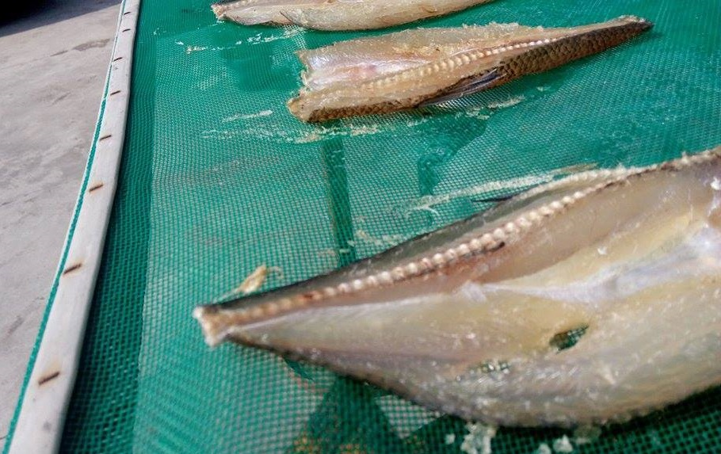
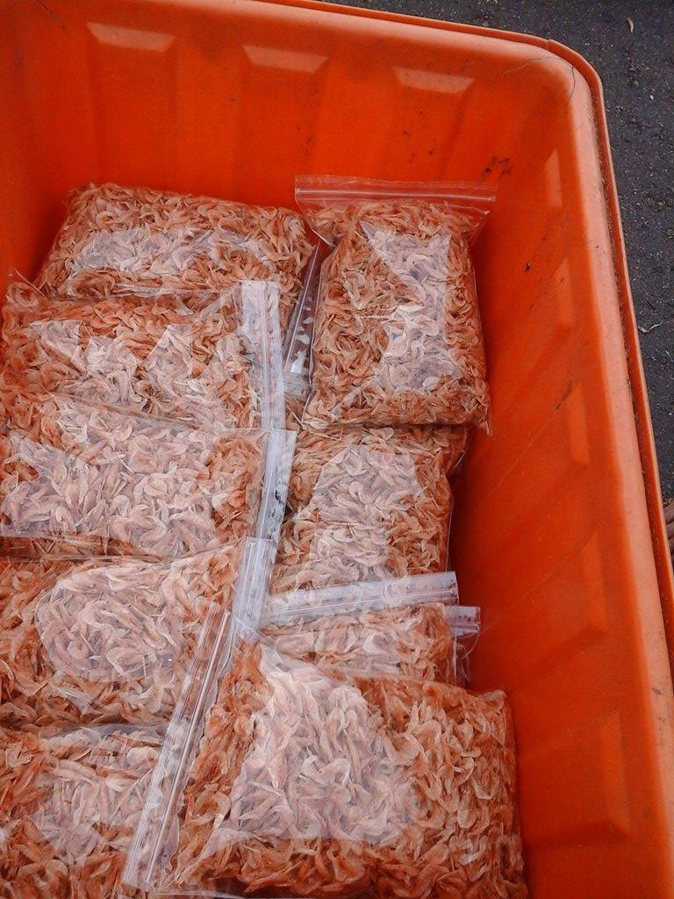

漁人村落
這是一個關於在高雄最南端且緊鄰林園石化工業區旁的一個小漁村的故事，這裡將記錄著在這純樸漁村發生的大小事。
除此之外，這裡也將分享漁人手作的天然海味，此為當地漁人經由天然日曬所製作而成的產品，因手作產品受海況及天氣影響，因此皆為限量。

漁人手作
─天然乾貨─
-
狗母魚乾
- 漁人日曬手作之一。
盛產高峰是每年十二月至三月間。 - 
- 此為將狗母魚去鱗頗半後再依個人喜好程度用鹽醃漬後進行日曬，直至曬到乾即可收藏備用。
保存期限：冷藏一個月，冷凍三個月（魚乾顏色變深屬正常現象）
據漁人指出，魚乾在料理前，需先用水泡軟，泡軟後的魚乾可用於燉湯、炒雞肉、炒豬肉皆可，甚至連蔥爆醬油都可以考慮哦！ 一台斤200元
-
中型蝦皮
- 漁人日曬手作之一。
此為大雨過後不定期出現商品。 - 
-
常與小魚一同捕獲上岸，將篩選後的蝦皮鋪灑在魚網上進行日曬，經數日曬乾後即可收藏備用。
保存期限：冷藏三個月，冷凍六個月（最佳食用約兩個月）
據漁人指出，曬乾後的蝦皮可連殼食用，又稱為「肉蝦」，料理方式與著名的「櫻花蝦」同，其香氣較佳，可作為炒米粉及絲瓜的佐料，增加風味。 -
一台斤300元